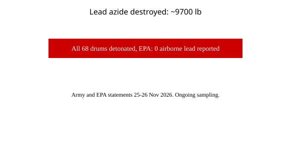

Iowa · explosives · 26 November 2026
Army and EPA report successful detonation of lead azide at Iowa plant; no airborne lead detected.

What is agreed across desks
On the morning of 25 November 2026 the U.S. Army conducted a controlled detonation of approximately 9,700 pounds of degraded lead azide stored in 68 plastic drums at the Iowa Army Ammunition Plant in Middletown. The Eighth Circuit had restored the EPA emergency permit the previous day, allowing the operation to proceed after earlier stays. Acting Army Secretary Adam Telle and Maj. Gen. Eric Shirley, commander of the Army Sustainment Command, stated that all barrels were destroyed, that there were no secondary explosions, and that there was no infrastructure damage in or around the installation. EPA real-time air monitors reported zero detection of airborne lead in the hours after the blast. An all-clear was issued for area residents later that day. Surface and soil sampling continues.
Reuters, the Associated Press live updates, CNN, and the Iowa Capital Dispatch all report the same core facts: quantity and location, successful destruction of the stockpile, zero airborne lead on immediate monitors, and the all-clear. Local reporting noted that the blast was audible and produced a visible plume that settled largely on plant grounds. The Army had deployed aqueous foam, ballistic gel, and water barriers intended to dampen the blast and capture lead particles.
What is only a quote
Telle said the operation “exceeded all expectations and was a huge success” and that the threat of an uncontrolled spontaneous detonation had been eliminated. Shirley said the mitigation “reduced as close to zero as is absolutely humanly possible the risk to the health and safety of the people of Middletown.” Those are official assessments of the immediate outcome. They are not final environmental reports. Claims that the plume traveled a particular distance or that residual lead remains in soil are projections or early observations, not completed laboratory results. Health and Human Services Secretary Robert F. Kennedy Jr. wrote on X that Iowa families “deserve clear answers about what the monitoring shows”; that is a statement of expectation, not a finding.
Mechanism / history a reader needs
Lead azide is a primary explosive historically used in detonators and blasting caps. The material at the Iowa plant had crystallized and degraded inside plastic drums, raising the risk of spontaneous detonation. Transport or chemical neutralization was judged higher risk than an in-place controlled blast. The Army sought an emergency permit from the EPA; litigation produced temporary stays that delayed the operation until the Eighth Circuit restored the permit on 24 November. The detonation occurred the following morning.
Mitigation measures included more than 3,600 gallons of aqueous foam, ballistic gel barriers, and surrounding water tanks. Real-time air monitors were placed along the projected plume path. Zero detection of airborne lead on those monitors in the hours after the blast is the checkable immediate result. Longer-term soil, water, and surface sampling is still underway; results have not been released. The plant has conducted routine munitions testing for decades; local residents told reporters that the controlled blast was quieter than some of those routine events.
Lead is a cumulative toxin. Even if airborne concentrations were below detection limits immediately after the blast, surface deposition can still be measured later. That is why the sampling program continues and why officials have not yet published a final residual-risk assessment.
What the story is not
It is not a finding that zero lead was deposited anywhere. It is not evidence that the mitigation measures eliminated every particle. It is not a political statement about the administration that ordered the operation. The photograph above is a type/location photograph of the plant sign. It is not a picture of the detonation plume or of any sampling site.

Source articles and scores
| Outlet | Headline | T | N | C |
|---|---|---|---|---|
| Reuters | US Army declares success in detonation of lead-based explosives stockpile in Iowa | 96 | 0 | 95 |
| AP | Iowa lead detonation was successful, Army says | 95 | 0 | 97 |
| CNN | The government says Iowa detonation results exceeded expectations. Now what? | 92 | -3 | 90 |
| Iowa Capital Dispatch | Army officials call lead azide detonation successful, still monitoring area for potential toxins | 94 | -5 | 92 |
Images: Wikimedia Commons type/location photograph of the plant sign linked via Special:FilePath. Captions state they are not the detonation. Chart is an original local SVG. onerror falls back to committed SVG. No CORS attribute.